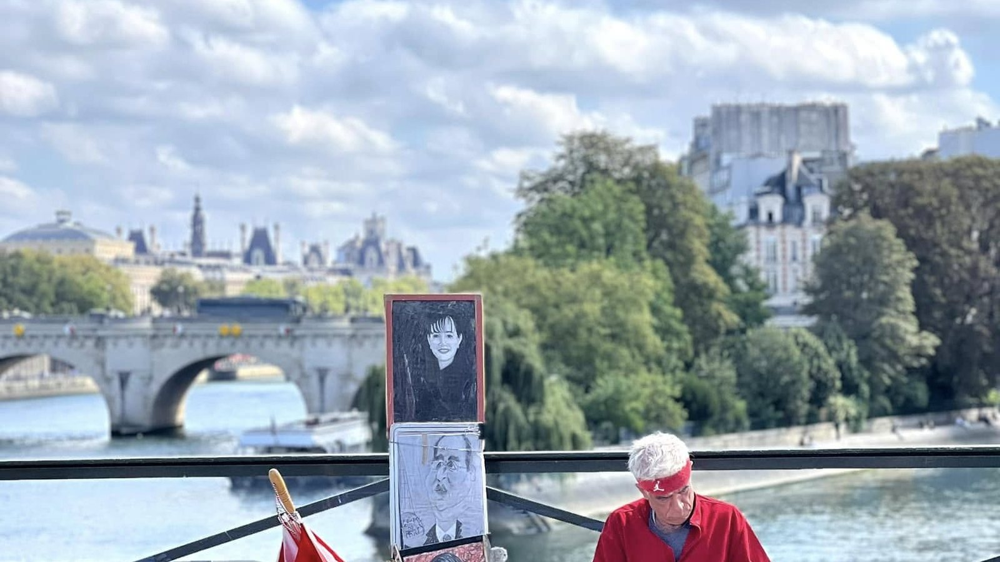

Une approche
née du terrain.
Fondé par Amélie-Thu DUONG, le cabinet s’appuie sur une expérience de l’investissement immobilier à Paris depuis 2014.
Acquisition, financement, exploitation et arbitrage : cette pratique nourrit une approche structurée, des ressources et des accompagnements au service des investisseurs.
01 · Le parcours de la fondatriceConstruire sans mode d’emploi.
Née au Vietnam, Amélie arrive en France à 20 ans sans parler français, avec l’envie d’y construire sa vie.
Après ses études, elle travaille dans la banque à Paris. En parallèle de son CDI, elle achète son premier bien en 2014. Elle apprend à analyser les financements, le marché, les travaux et les structures, puis à relier ces dimensions pour décider.
Chaque projet enrichit cette expérience et les principes qui guident aujourd’hui Amélie & Partners.
« Ma vraie compétence n’est pas de tout savoir sur l’immobilier. C’est de savoir chercher, vérifier, chiffrer et décider. »
Du Viêt Nam… à Paris.
- Le départ Née au Viêt Nam.
- À 20 ans Arrivée en France, sans parler français.
- Après les études La banque, à Paris.
- 2014 Première acquisition, en parallèle du CDI.
Le terrain avant le discours.
Un investissement se joue rarement dans un tableau seul. Il se joue dans la rue, dans l’immeuble, dans les documents, dans les échanges avec la banque, dans les travaux et dans la façon dont l’actif vivra après l’achat.
L’approche d’Amélie & Partners recherche cette cohérence d’ensemble : le bien, le prix, la dette, la trésorerie, l’exploitation, le risque et la suite du parcours.
Rendre les décisions
plus accessibles.
Amélie & Partners structure et transmet les enseignements du terrain pour aider les investisseurs à comprendre leurs choix et à agir avec méthode.
Des ressources gratuites pour démystifier les fausses croyances. Des méthodes structurées pour apprendre à raisonner. Et, lorsque la situation le justifie, une expertise personnalisée pour décider ou exécuter avec plus de précision.
L’objectif n’est pas que vous suiviez une recette. C’est que vous deveniez capable de comprendre la logique et de garder votre autonomie.
2014
Première acquisition à Paris
> 35
Investisseurs accompagnés
> 25 M€
Projets immobiliers structurés
> 80
Projets parisiens étudiés
Paris, au quotidien.
Les projets accompagnés se jouent dans la rue, dans l’immeuble et dans les documents autant que dans les tableaux.

Vous n’avez pas besoin de tout savoir avant d’avancer.
Vous avez besoin de poser la bonne question, puis de vérifier chaque hypothèse dans le bon ordre.